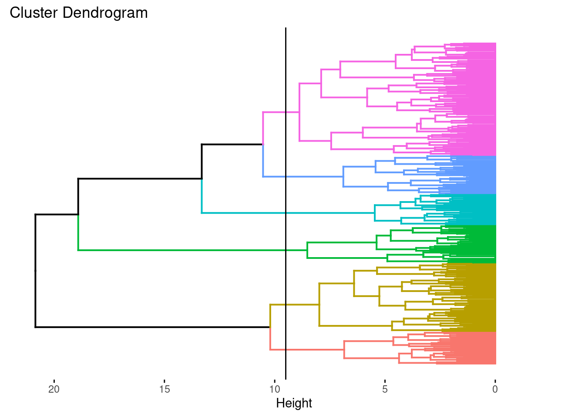
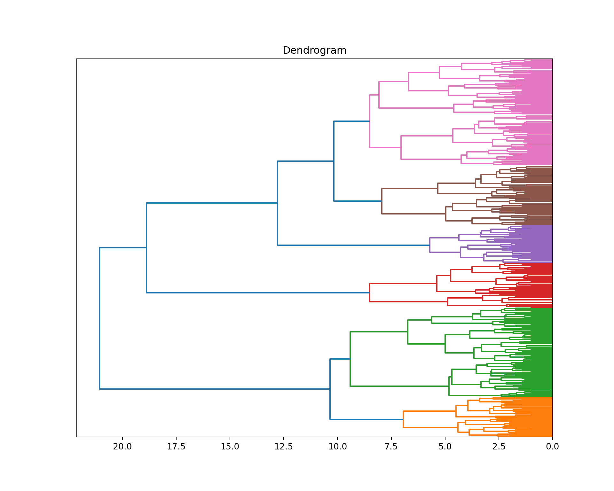

library("knitr")
library("purrr")
library("ggplot2")
library("dplyr")
library("magrittr")
library("readr")
library("dbscan")
library("factoextra")Proyecto: The joy of programming
Etapa 1 de 4
Introducción
En esta etapa aplicamos los algoritmos de agregación presentados a nuestro dataset de pinturas de Bob Ross. Es necesario que tengamos muy claro el contexto de nuestro trabajo, en caso de que haya dudas podemos volver a la presentación del proyecto.
Los algoritmos que vamos a aplicar son \(k\)-means, agregación jerárquica y DBSCAN. Para ejecutarlos utilizamos código en R y en Python. Al final, revisamos en una tabla cuántos grupos tenemos y cuántas pinturas tiene cada grupo. Esto con el fin de interpretar estos resultados con precisión en las siguientes unidades.
Objetivo actual
La primera etapa del proyecto está orientada a cumplir el primer objetivo específico:
Aplicar algoritmos de agregación al dataset e identificar los grupos subyacentes de las pinturas.
Preliminares
En primer lugar debemos cargar las librerías que vamos a utilizar.
Este código llama las librerías necesarias para los procedimientos.
library("purrr"): Carga la biblioteca “purrr”, que proporciona herramientas para trabajar de manera más eficiente con funciones y estructuras de datos.
library("ggplot2"): Carga la biblioteca “ggplot2”, una poderosa biblioteca para crear gráficos en R.
library("dplyr"): Carga la biblioteca “dplyr”, que proporciona funciones para realizar operaciones de manipulación de datos de manera fácil y eficiente.
library("magrittr"): Carga la biblioteca “magrittr”, que proporciona el operador %>% para facilitar la escritura de código en estilo de canal (pipe).
library("readr"): Carga la biblioteca “readr”, que facilita la lectura de datos en formatos planos y bien estructurados.
library("dbscan"): Carga la biblioteca “dbscan”, que implementa el algoritmo DBSCAN para la agrupación de datos basada en la densidad.
library("factoextra"): Carga la biblioteca “factoextra”, que proporciona funciones para manipular y visualizar resultados multivariados.
Este código llama las librerías necesarias para los procedimientos.
import pandas as pd
import numpy as np
import os
from matplotlib import pyplot as plt
import scipy.cluster.hierarchy as sch
from sklearn.cluster import KMeans, AgglomerativeClustering, DBSCANimport pandas as pd: Importa la biblioteca pandas y la renombra como “pd”. pandas es una biblioteca para el manejo y análisis de datos.
import numpy as np: Importa la biblioteca NumPy y la renombra como “np”. NumPy proporciona estructuras de datos y funciones para trabajar con arreglos numéricos.
import os: Importa el módulo os, que proporciona funciones para interactuar con el sistema operativo, como trabajar con rutas de archivos.
import scipy.cluster.hierarchy as sch: Importa el módulo de jerarquía de agrupamiento de la biblioteca SciPy, que incluye funciones para realizar agrupamientos jerárquicos.
from sklearn.cluster import KMeans, AgglomerativeClustering, DBSCAN: Importa varias funciones de la biblioteca scikit-learn, que proporcionan modelos de agrupamiento.
Generamos una lista de configuración. Esto es una buena práctica de programación en ciencia de datos. En esta lista vamos a almacenar información que utilizaremos en el código de forma reiterada.
mi_setup <- list(
datos_pinturas = file.path("01_data", "bob-ross.csv"),
archivo_resultados = file.path("01_data", "resultados_r_01.csv")
)Este código genera una lista de configuración. En esta lista se guardan las rutas y otros parámetros que se usan más adelante en el desarrollo.
datos_pinturas: Ruta del archivo “bob-ross.csv” ubicado en la carpeta “01_data”. Este archivo contiene datos relacionados con pinturas de Bob Ross.archivo_resultados: Ruta del archivo “resultados_r_01.csv” ubicado en la carpeta “01_data”. En este archivo se guardan los resultados de los grupos obtenidos en el análisis.
mi_setup = {
"datos_pinturas": os.path.join("01_data", "bob-ross.csv"),
"archivo_resultados": os.path.join("01_data", "resultados_py_01.csv")
}Este código genera una lista de configuración. En esta lista se guardan las rutas y otros parámetros que se usan más adelante en el desarrollo.
datos_pinturas: Ruta del archivo “bob-ross.csv” ubicado en la carpeta “01_data”. Este archivo contiene datos relacionados con pinturas de Bob Ross.archivo_resultados: Ruta del archivo “resultados_r_01.csv” ubicado en la carpeta “01_data”. En este archivo se guardan los resultados de los grupos obtenidos en el análisis.
Leemos nuestro archivo de datos.
read_csv(mi_setup$datos_pinturas) -> tb_pinturasSe utiliza la función read_csv para leer archivos CSV y se asignan los resultados a un dataframes tb_pinturas. Aquí está la explicación:
mi_setup$datos_pinturas: Accede al valor asociado con la clave “datos_pinturas” en el objeto mi_setup, que representa la ruta al archivo CSV que contiene los datos de pinturas de Bob Ross.
read_csv(...): Utiliza la función read_csv() del paquete readr para leer los datos desde el archivo CSV especificado.
tb_pinturas = pd.read_csv(mi_setup["datos_pinturas"])Utilizando la librería pandas, mediante la función pd.read_csv se lee el archivo CSV y se asignan los resultados a un DataFrames tb_pinturas. Aquí está la explicación:
mi_setup["datos_pinturas"]: Accede al valor asociado con la clave “datos_pinturas” en el diccionario mi_setup, que representa la ruta al archivo CSV que contiene los datos de pinturas de Bob Ross.
pd.read_csv(...): Utiliza la función read_csv() de pandas para leer los datos desde el archivo CSV especificado. El resultado se asigna al objeto tb_pinturas, que se convierte en un DataFrame de pandas. Este DataFrame puede ser utilizado para manipulación y análisis de los datos de pinturas de Bob Ross en Python.
Preparación de los datos
Selección de columnas: Seleccionamos las columnas que tengan una mayor cantidad de información para el entrenamiento de los algoritmos y se genera una tabla para guardar los grupos que vamos a encontrar.
tb_pinturas %>%
select(- EPISODE, - TITLE) %>%
map_dbl(var) %>%
as_tibble(rownames = "item") %>%
top_n(45, value) %>%
pull(item) -> nm_items_relevantes
tb_pinturas %>%
extract(nm_items_relevantes) -> tb_pinturas_caract
tb_pinturas %>%
select(EPISODE, TITLE) -> tb_gruposselect(-EPISODE, -TITLE): Excluye las columnas “EPISODE” y “TITLE” del DataFrame tb_pinturas.
map_dbl(var): Calcula la varianza para cada columna del DataFrame resultante.
as_tibble(rownames = "item"): Convierte el resultado en un tibble y asigna el nombre de la fila como “item”.
top_n(45, value): Selecciona las 45 filas con los mayores valores de varianza.
pull(item) -> nm_items_relevantes: Extrae los nombres de las filas seleccionadas y los asigna a un vector llamado nm_items_relevantes.
extract(nm_items_relevantes): Extrae las columnas relevantes utilizando los nombres previamente seleccionados y crea un nuevo DataFrame llamado tb_pinturas_caract.
select(EPISODE, TITLE): Selecciona solo las columnas “EPISODE” y “TITLE” del DataFrame original y crea un nuevo DataFrame llamado tb_grupos.
nm_items_relevantes = (tb_pinturas
.drop(["EPISODE", "TITLE"], axis=1)
.apply(np.var, axis = 0)
.sort_values()[-45 :]
.index)
tb_pinturas_caract = tb_pinturas.loc[: , nm_items_relevantes]
tb_grupos = tb_pinturas.loc[: , ("EPISODE", "TITLE")].drop(["EPISODE", "TITLE"], axis=1):/ Excluye las columnas “EPISODE” y “TITLE” del DataFrame tb_pinturas.
.apply(np.var, axis=0): Calcula la varianza para cada columna del DataFrame resultante.
.sort_values()[-45:].index: Ordena las varianzas de menor a mayor y selecciona las 45 mayores. Se extraen los índices de estas columnas relevantes y se asignan a nm_items_relevantes.
tb_pinturas_caract = tb_pinturas[nm_items_relevantes]: Crea un nuevo DataFrame llamado tb_pinturas_caract que contiene solo las columnas seleccionadas como relevantes.
tb_grupos = tb_pinturas[["EPISODE", "TITLE"]]: Crea un nuevo DataFrame llamado tb_grupos que contiene solo las columnas “EPISODE” y “TITLE” del DataFrame original.
Una vez preparados los datos, podemos corroborar su composición. El dataset original sigue igual, se han creado dos datasets adicionales, tb_pinturas caract que contiene las características de las pinturas y tb_grupos que contiene el identificador de las pinturas (episodio y título). Veamos rápidamente un resumen de nuestros datos.
tb_pinturas %>% glimpseRows: 403
Columns: 69
$ EPISODE <chr> "S01E01", "S01E02", "S01E03", "S01E04", "S01E05", "…
$ TITLE <chr> "\"A WALK IN THE WOODS\"", "\"MT. MCKINLEY\"", "\"E…
$ APPLE_FRAME <dbl> 0, 0, 0, 0, 0, 0, 0, 0, 0, 0, 0, 0, 0, 0, 0, 0, 0, …
$ AURORA_BOREALIS <dbl> 0, 0, 0, 0, 0, 0, 0, 0, 0, 0, 0, 0, 0, 0, 0, 0, 0, …
$ BARN <dbl> 0, 0, 0, 0, 0, 0, 0, 0, 0, 0, 0, 0, 0, 0, 0, 0, 0, …
$ BEACH <dbl> 0, 0, 0, 0, 0, 0, 0, 0, 1, 0, 0, 0, 0, 0, 0, 0, 0, …
$ BOAT <dbl> 0, 0, 0, 0, 0, 0, 0, 0, 0, 0, 0, 0, 0, 0, 0, 0, 0, …
$ BRIDGE <dbl> 0, 0, 0, 0, 0, 0, 0, 0, 0, 0, 0, 0, 0, 0, 0, 0, 0, …
$ BUILDING <dbl> 0, 0, 0, 0, 0, 0, 0, 0, 0, 0, 0, 0, 0, 0, 0, 0, 0, …
$ BUSHES <dbl> 1, 0, 0, 1, 0, 0, 0, 1, 0, 1, 0, 0, 1, 1, 0, 0, 1, …
$ CABIN <dbl> 0, 1, 1, 0, 0, 1, 0, 0, 0, 0, 0, 0, 0, 0, 0, 0, 1, …
$ CACTUS <dbl> 0, 0, 0, 0, 0, 0, 0, 0, 0, 0, 0, 0, 0, 0, 0, 0, 0, …
$ CIRCLE_FRAME <dbl> 0, 0, 0, 0, 0, 0, 0, 0, 0, 0, 0, 0, 0, 0, 0, 0, 0, …
$ CIRRUS <dbl> 0, 0, 0, 0, 0, 0, 0, 0, 0, 0, 0, 1, 0, 0, 0, 0, 0, …
$ CLIFF <dbl> 0, 0, 0, 0, 0, 0, 0, 0, 0, 0, 0, 0, 0, 0, 0, 0, 0, …
$ CLOUDS <dbl> 0, 1, 0, 1, 0, 0, 0, 0, 1, 0, 0, 1, 0, 0, 0, 1, 1, …
$ CONIFER <dbl> 0, 1, 1, 1, 0, 1, 0, 1, 0, 1, 0, 1, 1, 1, 1, 0, 1, …
$ CUMULUS <dbl> 0, 0, 0, 0, 0, 0, 0, 0, 0, 0, 0, 0, 0, 1, 0, 1, 1, …
$ DECIDUOUS <dbl> 1, 0, 0, 0, 1, 0, 1, 0, 0, 1, 1, 0, 1, 1, 0, 1, 1, …
$ DIANE_ANDRE <dbl> 0, 0, 0, 0, 0, 0, 0, 0, 0, 0, 0, 0, 0, 0, 0, 0, 0, …
$ DOCK <dbl> 0, 0, 0, 0, 0, 0, 0, 0, 0, 0, 0, 0, 0, 0, 0, 0, 0, …
$ DOUBLE_OVAL_FRAME <dbl> 0, 0, 0, 0, 0, 0, 0, 0, 0, 0, 0, 0, 0, 0, 0, 0, 0, …
$ FARM <dbl> 0, 0, 0, 0, 0, 0, 0, 0, 0, 0, 0, 0, 0, 0, 0, 0, 0, …
$ FENCE <dbl> 0, 0, 1, 0, 0, 0, 0, 0, 1, 0, 0, 0, 0, 0, 0, 0, 0, …
$ FIRE <dbl> 0, 0, 0, 0, 0, 0, 0, 0, 0, 0, 0, 0, 0, 0, 0, 0, 0, …
$ FLORIDA_FRAME <dbl> 0, 0, 0, 0, 0, 0, 0, 0, 0, 0, 0, 0, 0, 0, 0, 0, 0, …
$ FLOWERS <dbl> 0, 0, 0, 0, 0, 0, 0, 0, 0, 0, 0, 0, 0, 0, 0, 0, 0, …
$ FOG <dbl> 0, 0, 0, 0, 0, 0, 0, 0, 0, 0, 0, 0, 0, 0, 0, 0, 0, …
$ FRAMED <dbl> 0, 0, 0, 0, 0, 0, 0, 0, 0, 0, 0, 0, 0, 0, 0, 0, 0, …
$ GRASS <dbl> 1, 0, 0, 0, 0, 0, 0, 0, 0, 0, 0, 0, 1, 1, 0, 0, 0, …
$ GUEST <dbl> 0, 0, 0, 0, 0, 0, 0, 0, 0, 0, 0, 0, 0, 0, 0, 0, 0, …
$ HALF_CIRCLE_FRAME <dbl> 0, 0, 0, 0, 0, 0, 0, 0, 0, 0, 0, 0, 0, 0, 0, 0, 0, …
$ HALF_OVAL_FRAME <dbl> 0, 0, 0, 0, 0, 0, 0, 0, 0, 0, 0, 0, 0, 0, 0, 0, 0, …
$ HILLS <dbl> 0, 0, 0, 0, 0, 0, 0, 0, 0, 0, 0, 0, 0, 0, 0, 0, 0, …
$ LAKE <dbl> 0, 0, 0, 1, 0, 1, 1, 1, 0, 1, 1, 1, 0, 1, 1, 0, 1, …
$ LAKES <dbl> 0, 0, 0, 0, 0, 0, 0, 0, 0, 0, 0, 0, 0, 0, 0, 0, 0, …
$ LIGHTHOUSE <dbl> 0, 0, 0, 0, 0, 0, 0, 0, 0, 0, 0, 0, 0, 0, 0, 0, 0, …
$ MILL <dbl> 0, 0, 0, 0, 0, 0, 0, 0, 0, 0, 0, 0, 0, 0, 0, 0, 0, …
$ MOON <dbl> 0, 0, 0, 0, 0, 1, 0, 0, 0, 0, 0, 0, 0, 0, 0, 0, 0, …
$ MOUNTAIN <dbl> 0, 1, 1, 1, 0, 1, 1, 1, 0, 1, 0, 1, 1, 1, 0, 0, 1, …
$ MOUNTAINS <dbl> 0, 0, 1, 0, 0, 1, 1, 1, 0, 0, 0, 1, 0, 0, 0, 0, 1, …
$ NIGHT <dbl> 0, 0, 0, 0, 0, 1, 0, 0, 0, 0, 0, 0, 0, 0, 0, 0, 0, …
$ OCEAN <dbl> 0, 0, 0, 0, 0, 0, 0, 0, 1, 0, 0, 0, 0, 0, 0, 1, 0, …
$ OVAL_FRAME <dbl> 0, 0, 0, 0, 0, 0, 0, 0, 0, 0, 0, 0, 0, 0, 0, 0, 0, …
$ PALM_TREES <dbl> 0, 0, 0, 0, 0, 0, 0, 0, 0, 0, 0, 0, 0, 0, 0, 0, 0, …
$ PATH <dbl> 0, 0, 0, 0, 0, 0, 0, 0, 0, 0, 0, 0, 0, 0, 0, 0, 0, …
$ PERSON <dbl> 0, 0, 0, 0, 0, 0, 0, 0, 0, 0, 0, 0, 0, 0, 0, 0, 0, …
$ PORTRAIT <dbl> 0, 0, 0, 0, 0, 0, 0, 0, 0, 0, 0, 0, 0, 0, 0, 0, 0, …
$ RECTANGLE_3D_FRAME <dbl> 0, 0, 0, 0, 0, 0, 0, 0, 0, 0, 0, 0, 0, 0, 0, 0, 0, …
$ RECTANGULAR_FRAME <dbl> 0, 0, 0, 0, 0, 0, 0, 0, 0, 0, 0, 0, 0, 0, 0, 0, 0, …
$ RIVER <dbl> 1, 0, 0, 0, 1, 0, 0, 0, 0, 0, 0, 0, 0, 0, 0, 0, 0, …
$ ROCKS <dbl> 0, 0, 0, 0, 1, 0, 0, 0, 0, 0, 0, 0, 0, 0, 0, 0, 0, …
$ SEASHELL_FRAME <dbl> 0, 0, 0, 0, 0, 0, 0, 0, 0, 0, 0, 0, 0, 0, 0, 0, 0, …
$ SNOW <dbl> 0, 1, 0, 0, 0, 1, 0, 0, 0, 0, 0, 0, 0, 0, 1, 0, 1, …
$ SNOWY_MOUNTAIN <dbl> 0, 1, 0, 1, 0, 1, 1, 0, 0, 0, 0, 1, 1, 1, 0, 0, 1, …
$ SPLIT_FRAME <dbl> 0, 0, 0, 0, 0, 0, 0, 0, 0, 0, 0, 0, 0, 0, 0, 0, 0, …
$ STEVE_ROSS <dbl> 0, 0, 0, 0, 0, 0, 0, 0, 0, 0, 0, 0, 0, 0, 0, 0, 0, …
$ STRUCTURE <dbl> 0, 0, 1, 0, 0, 1, 0, 0, 0, 0, 0, 0, 0, 0, 0, 0, 1, …
$ SUN <dbl> 0, 0, 1, 0, 0, 0, 0, 0, 0, 0, 0, 0, 0, 0, 1, 1, 0, …
$ TOMB_FRAME <dbl> 0, 0, 0, 0, 0, 0, 0, 0, 0, 0, 0, 0, 0, 0, 0, 0, 0, …
$ TREE <dbl> 1, 1, 1, 1, 1, 1, 1, 1, 0, 1, 1, 1, 1, 1, 1, 1, 1, …
$ TREES <dbl> 1, 1, 1, 1, 1, 1, 1, 1, 0, 1, 1, 1, 1, 1, 1, 1, 1, …
$ TRIPLE_FRAME <dbl> 0, 0, 0, 0, 0, 0, 0, 0, 0, 0, 0, 0, 0, 0, 0, 0, 0, …
$ WATERFALL <dbl> 0, 0, 0, 0, 0, 0, 0, 0, 0, 0, 0, 0, 0, 0, 0, 0, 0, …
$ WAVES <dbl> 0, 0, 0, 0, 0, 0, 0, 0, 0, 0, 0, 0, 0, 0, 0, 1, 0, …
$ WINDMILL <dbl> 0, 0, 0, 0, 0, 0, 0, 0, 0, 0, 0, 0, 0, 0, 0, 0, 0, …
$ WINDOW_FRAME <dbl> 0, 0, 0, 0, 0, 0, 0, 0, 0, 0, 0, 0, 0, 0, 0, 0, 0, …
$ WINTER <dbl> 0, 1, 1, 0, 0, 1, 0, 0, 0, 0, 0, 0, 0, 0, 0, 0, 0, …
$ WOOD_FRAMED <dbl> 0, 0, 0, 0, 0, 0, 0, 0, 0, 0, 0, 0, 0, 0, 0, 0, 0, …tb_pinturas_caract %>% glimpseRows: 403
Columns: 45
$ AURORA_BOREALIS <dbl> 0, 0, 0, 0, 0, 0, 0, 0, 0, 0, 0, 0, 0, 0, 0, 0, 0, 0, …
$ BARN <dbl> 0, 0, 0, 0, 0, 0, 0, 0, 0, 0, 0, 0, 0, 0, 0, 0, 0, 0, …
$ BEACH <dbl> 0, 0, 0, 0, 0, 0, 0, 0, 1, 0, 0, 0, 0, 0, 0, 0, 0, 0, …
$ BOAT <dbl> 0, 0, 0, 0, 0, 0, 0, 0, 0, 0, 0, 0, 0, 0, 0, 0, 0, 0, …
$ BRIDGE <dbl> 0, 0, 0, 0, 0, 0, 0, 0, 0, 0, 0, 0, 0, 0, 0, 0, 0, 0, …
$ BUSHES <dbl> 1, 0, 0, 1, 0, 0, 0, 1, 0, 1, 0, 0, 1, 1, 0, 0, 1, 1, …
$ CABIN <dbl> 0, 1, 1, 0, 0, 1, 0, 0, 0, 0, 0, 0, 0, 0, 0, 0, 1, 0, …
$ CACTUS <dbl> 0, 0, 0, 0, 0, 0, 0, 0, 0, 0, 0, 0, 0, 0, 0, 0, 0, 0, …
$ CIRCLE_FRAME <dbl> 0, 0, 0, 0, 0, 0, 0, 0, 0, 0, 0, 0, 0, 0, 0, 0, 0, 0, …
$ CIRRUS <dbl> 0, 0, 0, 0, 0, 0, 0, 0, 0, 0, 0, 1, 0, 0, 0, 0, 0, 0, …
$ CLIFF <dbl> 0, 0, 0, 0, 0, 0, 0, 0, 0, 0, 0, 0, 0, 0, 0, 0, 0, 0, …
$ CLOUDS <dbl> 0, 1, 0, 1, 0, 0, 0, 0, 1, 0, 0, 1, 0, 0, 0, 1, 1, 0, …
$ CONIFER <dbl> 0, 1, 1, 1, 0, 1, 0, 1, 0, 1, 0, 1, 1, 1, 1, 0, 1, 0, …
$ CUMULUS <dbl> 0, 0, 0, 0, 0, 0, 0, 0, 0, 0, 0, 0, 0, 1, 0, 1, 1, 0, …
$ DECIDUOUS <dbl> 1, 0, 0, 0, 1, 0, 1, 0, 0, 1, 1, 0, 1, 1, 0, 1, 1, 1, …
$ FENCE <dbl> 0, 0, 1, 0, 0, 0, 0, 0, 1, 0, 0, 0, 0, 0, 0, 0, 0, 0, …
$ FLOWERS <dbl> 0, 0, 0, 0, 0, 0, 0, 0, 0, 0, 0, 0, 0, 0, 0, 0, 0, 0, …
$ FOG <dbl> 0, 0, 0, 0, 0, 0, 0, 0, 0, 0, 0, 0, 0, 0, 0, 0, 0, 0, …
$ FRAMED <dbl> 0, 0, 0, 0, 0, 0, 0, 0, 0, 0, 0, 0, 0, 0, 0, 0, 0, 0, …
$ GRASS <dbl> 1, 0, 0, 0, 0, 0, 0, 0, 0, 0, 0, 0, 1, 1, 0, 0, 0, 1, …
$ GUEST <dbl> 0, 0, 0, 0, 0, 0, 0, 0, 0, 0, 0, 0, 0, 0, 0, 0, 0, 0, …
$ HILLS <dbl> 0, 0, 0, 0, 0, 0, 0, 0, 0, 0, 0, 0, 0, 0, 0, 0, 0, 0, …
$ LAKE <dbl> 0, 0, 0, 1, 0, 1, 1, 1, 0, 1, 1, 1, 0, 1, 1, 0, 1, 1, …
$ MILL <dbl> 0, 0, 0, 0, 0, 0, 0, 0, 0, 0, 0, 0, 0, 0, 0, 0, 0, 0, …
$ MOON <dbl> 0, 0, 0, 0, 0, 1, 0, 0, 0, 0, 0, 0, 0, 0, 0, 0, 0, 0, …
$ MOUNTAIN <dbl> 0, 1, 1, 1, 0, 1, 1, 1, 0, 1, 0, 1, 1, 1, 0, 0, 1, 0, …
$ MOUNTAINS <dbl> 0, 0, 1, 0, 0, 1, 1, 1, 0, 0, 0, 1, 0, 0, 0, 0, 1, 0, …
$ NIGHT <dbl> 0, 0, 0, 0, 0, 1, 0, 0, 0, 0, 0, 0, 0, 0, 0, 0, 0, 0, …
$ OCEAN <dbl> 0, 0, 0, 0, 0, 0, 0, 0, 1, 0, 0, 0, 0, 0, 0, 1, 0, 0, …
$ OVAL_FRAME <dbl> 0, 0, 0, 0, 0, 0, 0, 0, 0, 0, 0, 0, 0, 0, 0, 0, 0, 0, …
$ PALM_TREES <dbl> 0, 0, 0, 0, 0, 0, 0, 0, 0, 0, 0, 0, 0, 0, 0, 0, 0, 0, …
$ PATH <dbl> 0, 0, 0, 0, 0, 0, 0, 0, 0, 0, 0, 0, 0, 0, 0, 0, 0, 0, …
$ PORTRAIT <dbl> 0, 0, 0, 0, 0, 0, 0, 0, 0, 0, 0, 0, 0, 0, 0, 0, 0, 0, …
$ RIVER <dbl> 1, 0, 0, 0, 1, 0, 0, 0, 0, 0, 0, 0, 0, 0, 0, 0, 0, 0, …
$ ROCKS <dbl> 0, 0, 0, 0, 1, 0, 0, 0, 0, 0, 0, 0, 0, 0, 0, 0, 0, 0, …
$ SNOW <dbl> 0, 1, 0, 0, 0, 1, 0, 0, 0, 0, 0, 0, 0, 0, 1, 0, 1, 0, …
$ SNOWY_MOUNTAIN <dbl> 0, 1, 0, 1, 0, 1, 1, 0, 0, 0, 0, 1, 1, 1, 0, 0, 1, 0, …
$ STEVE_ROSS <dbl> 0, 0, 0, 0, 0, 0, 0, 0, 0, 0, 0, 0, 0, 0, 0, 0, 0, 0, …
$ STRUCTURE <dbl> 0, 0, 1, 0, 0, 1, 0, 0, 0, 0, 0, 0, 0, 0, 0, 0, 1, 0, …
$ SUN <dbl> 0, 0, 1, 0, 0, 0, 0, 0, 0, 0, 0, 0, 0, 0, 1, 1, 0, 0, …
$ TREE <dbl> 1, 1, 1, 1, 1, 1, 1, 1, 0, 1, 1, 1, 1, 1, 1, 1, 1, 1, …
$ TREES <dbl> 1, 1, 1, 1, 1, 1, 1, 1, 0, 1, 1, 1, 1, 1, 1, 1, 1, 1, …
$ WATERFALL <dbl> 0, 0, 0, 0, 0, 0, 0, 0, 0, 0, 0, 0, 0, 0, 0, 0, 0, 0, …
$ WAVES <dbl> 0, 0, 0, 0, 0, 0, 0, 0, 0, 0, 0, 0, 0, 0, 0, 1, 0, 0, …
$ WINTER <dbl> 0, 1, 1, 0, 0, 1, 0, 0, 0, 0, 0, 0, 0, 0, 0, 0, 0, 0, …tb_grupos %>% glimpseRows: 403
Columns: 2
$ EPISODE <chr> "S01E01", "S01E02", "S01E03", "S01E04", "S01E05", "S01E06", "S…
$ TITLE <chr> "\"A WALK IN THE WOODS\"", "\"MT. MCKINLEY\"", "\"EBONY SUNSET…tb_pinturas.info()<class 'pandas.core.frame.DataFrame'>
RangeIndex: 403 entries, 0 to 402
Data columns (total 69 columns):
# Column Non-Null Count Dtype
--- ------ -------------- -----
0 EPISODE 403 non-null object
1 TITLE 403 non-null object
2 APPLE_FRAME 403 non-null int64
3 AURORA_BOREALIS 403 non-null int64
4 BARN 403 non-null int64
5 BEACH 403 non-null int64
6 BOAT 403 non-null int64
7 BRIDGE 403 non-null int64
8 BUILDING 403 non-null int64
9 BUSHES 403 non-null int64
10 CABIN 403 non-null int64
11 CACTUS 403 non-null int64
12 CIRCLE_FRAME 403 non-null int64
13 CIRRUS 403 non-null int64
14 CLIFF 403 non-null int64
15 CLOUDS 403 non-null int64
16 CONIFER 403 non-null int64
17 CUMULUS 403 non-null int64
18 DECIDUOUS 403 non-null int64
19 DIANE_ANDRE 403 non-null int64
20 DOCK 403 non-null int64
21 DOUBLE_OVAL_FRAME 403 non-null int64
22 FARM 403 non-null int64
23 FENCE 403 non-null int64
24 FIRE 403 non-null int64
25 FLORIDA_FRAME 403 non-null int64
26 FLOWERS 403 non-null int64
27 FOG 403 non-null int64
28 FRAMED 403 non-null int64
29 GRASS 403 non-null int64
30 GUEST 403 non-null int64
31 HALF_CIRCLE_FRAME 403 non-null int64
32 HALF_OVAL_FRAME 403 non-null int64
33 HILLS 403 non-null int64
34 LAKE 403 non-null int64
35 LAKES 403 non-null int64
36 LIGHTHOUSE 403 non-null int64
37 MILL 403 non-null int64
38 MOON 403 non-null int64
39 MOUNTAIN 403 non-null int64
40 MOUNTAINS 403 non-null int64
41 NIGHT 403 non-null int64
42 OCEAN 403 non-null int64
43 OVAL_FRAME 403 non-null int64
44 PALM_TREES 403 non-null int64
45 PATH 403 non-null int64
46 PERSON 403 non-null int64
47 PORTRAIT 403 non-null int64
48 RECTANGLE_3D_FRAME 403 non-null int64
49 RECTANGULAR_FRAME 403 non-null int64
50 RIVER 403 non-null int64
51 ROCKS 403 non-null int64
52 SEASHELL_FRAME 403 non-null int64
53 SNOW 403 non-null int64
54 SNOWY_MOUNTAIN 403 non-null int64
55 SPLIT_FRAME 403 non-null int64
56 STEVE_ROSS 403 non-null int64
57 STRUCTURE 403 non-null int64
58 SUN 403 non-null int64
59 TOMB_FRAME 403 non-null int64
60 TREE 403 non-null int64
61 TREES 403 non-null int64
62 TRIPLE_FRAME 403 non-null int64
63 WATERFALL 403 non-null int64
64 WAVES 403 non-null int64
65 WINDMILL 403 non-null int64
66 WINDOW_FRAME 403 non-null int64
67 WINTER 403 non-null int64
68 WOOD_FRAMED 403 non-null int64
dtypes: int64(67), object(2)
memory usage: 217.4+ KBtb_pinturas_caract.info()<class 'pandas.core.frame.DataFrame'>
RangeIndex: 403 entries, 0 to 402
Data columns (total 45 columns):
# Column Non-Null Count Dtype
--- ------ -------------- -----
0 AURORA_BOREALIS 403 non-null int64
1 BOAT 403 non-null int64
2 MILL 403 non-null int64
3 CIRCLE_FRAME 403 non-null int64
4 PORTRAIT 403 non-null int64
5 MOON 403 non-null int64
6 CACTUS 403 non-null int64
7 BRIDGE 403 non-null int64
8 CLIFF 403 non-null int64
9 PALM_TREES 403 non-null int64
10 NIGHT 403 non-null int64
11 STEVE_ROSS 403 non-null int64
12 FLOWERS 403 non-null int64
13 BARN 403 non-null int64
14 HILLS 403 non-null int64
15 GUEST 403 non-null int64
16 FOG 403 non-null int64
17 FENCE 403 non-null int64
18 BEACH 403 non-null int64
19 CIRRUS 403 non-null int64
20 WAVES 403 non-null int64
21 OCEAN 403 non-null int64
22 OVAL_FRAME 403 non-null int64
23 WATERFALL 403 non-null int64
24 SUN 403 non-null int64
25 TREE 403 non-null int64
26 PATH 403 non-null int64
27 FRAMED 403 non-null int64
28 TREES 403 non-null int64
29 WINTER 403 non-null int64
30 CABIN 403 non-null int64
31 SNOW 403 non-null int64
32 ROCKS 403 non-null int64
33 STRUCTURE 403 non-null int64
34 CUMULUS 403 non-null int64
35 MOUNTAINS 403 non-null int64
36 SNOWY_MOUNTAIN 403 non-null int64
37 BUSHES 403 non-null int64
38 RIVER 403 non-null int64
39 GRASS 403 non-null int64
40 LAKE 403 non-null int64
41 MOUNTAIN 403 non-null int64
42 DECIDUOUS 403 non-null int64
43 CLOUDS 403 non-null int64
44 CONIFER 403 non-null int64
dtypes: int64(45)
memory usage: 141.8 KBtb_grupos.info()<class 'pandas.core.frame.DataFrame'>
RangeIndex: 403 entries, 0 to 402
Data columns (total 2 columns):
# Column Non-Null Count Dtype
--- ------ -------------- -----
0 EPISODE 403 non-null object
1 TITLE 403 non-null object
dtypes: object(2)
memory usage: 6.4+ KBAlgoritmos de agrupación
A continuación, aplicamos los distintos algoritmos de agregación a las pinturas.
Algoritmo jerárquico
El siguiente es el código para el algoritmo jerárquico. En primer lugar calculamos la matriz de distancias del conjunto de datos. y luego aplicamos el algoritmo especificando la distancia entre grupos, en este caso es "ward".
tb_pinturas_caract %>%
dist(method = "euclidean") %>%
hclust(method = "ward.D2") -> ls_jerarquico tb_pinturas_caract %>% dist(): Calcula la matriz de distancias entre las filas del DataFrame tb_pinturas_caract. El operador %>% (pipe) se utiliza para encadenar funciones en un flujo.
-> mt_dist_pint: Asigna la matriz de distancias resultante a un objeto llamado mt_dist_pint.
mt_dist_pint %>% hclust(method = "ward.D2"): Realiza un clúster jerárquico utilizando el método de enlace “ward.D2” en la matriz de distancias mt_dist_pint.
-> ls_jerarquico: Asigna el resultado del clúster jerárquico a un objeto llamado ls_jerarquico.
mod_jerarquico = AgglomerativeClustering(
n_clusters = 6,
metric = 'euclidean',
linkage ='ward'
)
mod_jerarquico = mod_jerarquico.fit(tb_pinturas_caract)AgglomerativeClustering(...): Se instancia un objeto del tipo AgglomerativeClustering, que implementa el algoritmo de agrupamiento jerárquico.
n_clusters=6: Especifica el número de clústeres deseados, en este caso, se establece en 6.
metric='euclidean': Define la métrica de distancia utilizada para calcular la similaridad entre puntos. En este caso, se utiliza la distancia euclidiana.
linkage='ward': Especifica el método de enlace utilizado en el algoritmo, en este caso, el enlace “ward” que minimiza la varianza entre los clústeres.
mod_jerarquico.fit(tb_pinturas_caract): Se ajusta el modelo de agrupamiento jerárquico a los datos en tb_pinturas_caract. El modelo aprenderá a asignar las observaciones en el número especificado de clústeres utilizando la distancia euclidiana y el método de enlace “ward”.
A continuación, elaboramos el dendrograma. En este observamos que al hacer un corte podemos obtener 6 grupos bien definidos.
ls_jerarquico %>%
fviz_dend(6, show_labels = FALSE, horiz = TRUE) +
geom_hline(yintercept = 9.5)
ls_jerarquico %>% as.dendrogram() %>% ...: Convierte el resultado del clúster jerárquico (ls_jerarquico) en un dendrograma utilizando la función as.dendrogram() y luego encadena varias funciones de configuración y visualización utilizando el operador %>% (pipe).
set("labels_col", k=6): Establece colores diferentes para las etiquetas según los grupos definidos por k=6 clústeres.
set("branches_k_color", k=6): Asigna colores diferentes a las ramas del dendrograma según los grupos definidos por k=6 clústeres.
set("labels", NULL): Elimina las etiquetas originales del dendrograma.
plot(horiz=TRUE, axes=FALSE): Realiza la visualización del dendrograma con orientación horizontal y sin mostrar ejes.
abline(v = 9, lty = 2): Agrega una línea vertical discontinua en la posición 9 en el dendrograma. Esta línea nos proporciona la altura a la que se realiza la partición en 6 grupos.
plt.figure(figsize=(10,8))
dendrogram = sch.dendrogram(
sch.linkage(tb_pinturas_caract, method = "ward"),
color_threshold = 10, orientation = "left", no_labels = True)
plt.title('Dendrogram')
plt.show()
plt.close()plt.figure(figsize=(10,8)): Crea una nueva figura de tamaño 10x8 pulgadas utilizando matplotlib.pyplot.
dendrogram = sch.dendrogram(...): Calcula y genera el dendrograma utilizando la función dendrogram de scipy.cluster.hierarchy. Se utiliza sch.linkage para realizar el agrupamiento jerárquico con el método de enlace “ward”.
sch.linkage(tb_pinturas_caract, method="ward"): Realiza el agrupamiento jerárquico con el método de enlace “ward” en los datos contenidos en tb_pinturas_caract.
color_threshold=9: Define el umbral de color para resaltar los clústeres en el dendrograma. Las ramas por debajo de este umbral se muestran en el mismo color.
orientation="left": Orienta el dendrograma hacia la izquierda.
no_labels=True: Suprime las etiquetas de las hojas del dendrograma.
plt.title('Dendrogram'): Agrega un título al dendrograma.
plt.show(): Muestra la figura con el dendrograma.
plt.close(): Cierra la figura, liberando recursos y previniendo posibles superposiciones en visualizaciones futuras.
Luego extraemos los grupos y los guardamos en una nueva columna de nuestros datos. Adicionalmente, revisamos el tamaño de cada grupo.
tb_grupos %<>%
mutate(
grupos_jerar = ls_jerarquico %>%
cutree(6)
)
tb_grupos %>%
count(grupos_jerar) -> tb_cuenta_grupos| grupos_jerar | n |
|---|---|
| 1 | 141 |
| 2 | 41 |
| 3 | 86 |
| 4 | 48 |
| 5 | 39 |
| 6 | 48 |
tb_grupos %<>%: Utiliza el operador %<>% para realizar la asignación en el propio objeto tb_grupos, es decir, modifica tb_grupos in-place.
mutate(...): Crea o modifica columnas en el DataFrame.
grupos_jerar: Se crea una nueva columna llamada grupos_jerar en el DataFrame tb_grupos.
ls_jerarquico %>% cutree(6): Utiliza la función cutree para asignar a cada observación en ls_jerarquico un número de grupo (clúster) según la división en 6 grupos realizada previamente.
tb_grupos %>% count(grupos_jerar): Utiliza la función count de dplyr para contar la frecuencia de cada valor único en la columna grupos_jerar de tb_grupos.
tb_grupos['grupos_jerar'] = (mod_jerarquico
.fit_predict(tb_pinturas_caract)
.tolist())
tb_cuenta_grupos = (tb_grupos.grupos_jerar
.value_counts()
.rename('count')
.reset_index())| grupos_jerar | count | |
|---|---|---|
| 0 | 1 | 113 |
| 1 | 0 | 95 |
| 2 | 5 | 64 |
| 3 | 2 | 48 |
| 4 | 4 | 43 |
| 5 | 3 | 40 |
tb_grupos["grupos_jerar"] = mod_jerarquico.fit_predict(tb_pinturas_caract):
mod_jerarquico.fit_predict(tb_pinturas_caract): Utiliza el método fit_predict de AgglomerativeClustering para realizar el ajuste y predicción de grupos jerárquicos en los datos contenidos en tb_pinturas_caract. Los resultados se asignan a una nueva columna llamada grupos_jerar en el DataFrame tb_grupos.
tb_grupos.grupos_jerar.value_counts():
tb_grupos.grupos_jerar: Accede a la columna grupos_jerar en el DataFrame tb_grupos.
value_counts(): Calcula la frecuencia de cada valor único en la columna grupos_jerar.
Algoritmo \(k\)-means
El algoritmo \(k\)-means se ejecuta con el siguiente código.
tb_pinturas_caract %>%
kmeans(6) -> ls_kmeanstb_pinturas_caract %>% kmeans(6) -> ls_kmeans:
%>%: Operador pipe que pasa el resultado de la operación anterior como el primer argumento de la siguiente operación.
kmeans(6): Aplica el algoritmo k-Means para realizar el agrupamiento en tb_pinturas_caract con 6 clústeres.
-> ls_kmeans: Asigna el resultado del agrupamiento a un objeto llamado ls_kmeans.
mod_kmeans = KMeans(
init="random",
n_clusters=6,
n_init = 1
)
mod_kmeans = mod_kmeans.fit(tb_pinturas_caract)KMeans: Crea una instancia del modelo de k-Means utilizando la clase KMeans de scikit-learn.
init="random": Especifica que la inicialización de los centroides se realice de manera aleatoria.
n_clusters=6: Define el número de clústeres deseados, en este caso, se establece en 6.
fit(tb_pinturas_caract): Ajusta el modelo de k-Means a los datos contenidos en tb_pinturas_caract. El modelo aprenderá a asignar las observaciones en el número especificado de clústeres.
Luego extraemos los grupos y los guardamos en una nueva columna de nuestros datos. Adicionalmente, revisamos el tamaño de cada grupo.
tb_grupos %<>%
mutate(
grupos_kmeans = ls_kmeans %>%
pluck("cluster")
)
tb_grupos %>%
count(grupos_kmeans) -> tb_cuenta_grupos| grupos_kmeans | n |
|---|---|
| 1 | 123 |
| 2 | 48 |
| 3 | 51 |
| 4 | 35 |
| 5 | 75 |
| 6 | 71 |
%<>%: Operador pipe que realiza la asignación in-place al propio objeto.
mutate(...): Crea o modifica columnas en el DataFrame.
grupos_kmeans: Se crea una nueva columna llamada grupos_kmeans en el DataFrame tb_grupos.
ls_kmeans %>% pluck("cluster"): Extrae la información de los clústeres asignados por el modelo de k-Means (ls_kmeans) utilizando la función pluck y la clave “cluster”.
tb_grupos %>% count(grupos_kmeans): Utiliza la función count de dplyr para contar la frecuencia de cada valor único en la columna grupos_kmeans de tb_grupos.
tb_grupos['grupos_kmeans'] = mod_kmeans.labels_
tb_cuenta_grupos = (tb_grupos.grupos_kmeans
.value_counts()
.rename('count')
.reset_index())| grupos_kmeans | count | |
|---|---|---|
| 0 | 2 | 94 |
| 1 | 0 | 84 |
| 2 | 1 | 68 |
| 3 | 5 | 60 |
| 4 | 4 | 49 |
| 5 | 3 | 48 |
mod_kmeans.labels_: Accede a los resultados de la asignación de clústeres realizada por el modelo de k-Means (mod_kmeans). Los resultados se encuentran en el atributo labels_.
tb_grupos['grupos_kmeans']: Crea una nueva columna llamada grupos_kmeans en el DataFrame tb_grupos y asigna los resultados de la asignación de clústeres.
tb_grupos.grupos_kmeans: Accede a la columna grupos_kmeans en el DataFrame tb_grupos.
value_counts(): Calcula la frecuencia de cada valor único en la columna grupos_kmeans.
Algoritmo DBSCAN
El algoritmo DBSCAN se ejecuta con el siguiente código. Es importante probar distintas configuraciones para los hiperparámetros \(\epsilon\) y \(n_{min}\). En este caso se utilizamos \(\epsilon = 1.5\) y \(n_{min} = 3\).
tb_pinturas_caract %>%
dbscan(eps = 1.5, minPts = 3) -> ls_dbscan%>%: Operador pipe que pasa el resultado de la operación anterior como el primer argumento de la siguiente operación.
dbscan(eps = 1.5, minPts = 3): Aplica el algoritmo DBSCAN para realizar el agrupamiento en tb_pinturas_caract. Se especifican los parámetros eps (radio máximo para formar un clúster) y minPts (número mínimo de puntos para formar un clúster).
-> ls_dbscan: Asigna el resultado del agrupamiento a un objeto llamado ls_dbscan.
mod_dbscan = DBSCAN(eps=1.5, min_samples=3)
mod_dbscan = mod_dbscan.fit(tb_pinturas_caract)DBSCAN: Crea una instancia del modelo de DBSCAN utilizando la clase DBSCAN de scikit-learn.
eps=1.5: Especifica el radio máximo para formar un clúster.
min_samples=3: Especifica el número mínimo de puntos para formar un clúster.
fit(tb_pinturas_caract): Ajusta el modelo DBSCAN a los datos contenidos en tb_pinturas_caract. El modelo aprenderá a asignar las observaciones en clústeres según los parámetros especificados.
Luego extraemos los grupos y los guardamos en una nueva columna de nuestros datos. Adicionalmente, revisamos el tamaño de cada grupo.
tb_grupos %<>%
mutate(
grupos_dbscan = ls_dbscan %>%
pluck("cluster")
)
tb_grupos %>%
count(grupos_dbscan) -> tb_cuenta_grupos| grupos_dbscan | n |
|---|---|
| 0 | 123 |
| 1 | 233 |
| 2 | 6 |
| 3 | 7 |
| 4 | 21 |
| 5 | 8 |
| 6 | 5 |
%<>%: Operador pipe que realiza la asignación in-place al propio objeto.
mutate(...): Crea o modifica columnas en el DataFrame.
grupos_dbscan: Se crea una nueva columna llamada grupos_dbscan en el DataFrame tb_pinturas.
ls_dbscan %>% pluck("cluster"): Extrae la información de los clústeres asignados por el modelo DBSCAN (ls_dbscan) utilizando la función pluck y la clave “cluster”.
tb_pinturas %>% count(grupos_dbscan): Utiliza la función count de dplyr para contar la frecuencia de cada valor único en la columna grupos_dbscan de tb_pinturas.
tb_grupos['grupos_dbscan'] = mod_dbscan.labels_
tb_cuenta_grupos = (tb_grupos.grupos_dbscan
.value_counts()
.rename('count')
.reset_index())| grupos_dbscan | count | |
|---|---|---|
| 0 | 0 | 233 |
| 1 | -1 | 123 |
| 2 | 3 | 21 |
| 3 | 4 | 8 |
| 4 | 2 | 7 |
| 5 | 1 | 6 |
| 6 | 5 | 5 |
mod_dbscan.labels_: Accede a los resultados de la asignación de clústeres realizada por el modelo de DBSCAN (mod_dbscan). Los resultados se encuentran en el atributo labels_.
tb_grupos['grupos_dbscan']: Crea una nueva columna llamada grupos_dbscan en el DataFrame tb_grupos y asigna los resultados de la asignación de clústeres.
tb_grupos.grupos_dbscan: Accede a la columna grupos_dbscan en el DataFrame tb_grupos.
value_counts(): Calcula la frecuencia de cada valor único en la columna grupos_dbscan.
Guardar los resultados
No se nos puede olvidar guardar nuestros resultados. Para esto podemos utilizar archivos tipo .csv.
write_csv(tb_grupos, mi_setup$archivo_resultados)Este código guarda los resultados de los procedimientos realizados. Explicación:
write_csv: Es una función del paquetereadrque permite guardar datos en texto plano.tb_grupos: Es el dataframe que contiene los resultados obtenidos.mi_setup$archivo_resultados: Es la entrada en la lista de configuración que contiene la ruta del archivo donde se guardan los resultados.
tb_grupos.to_csv(mi_setup["archivo_resultados"], index = False)Este código guarda los resultados de los procedimientos realizados. Explicación:
.to_csv: es el método de la libreríapandaspara escribir datos en texto plano. Se utiliza la instrucciónindex = Falsepara indicar se omita en el archivo resultado la columna del índice de fila.tb_grupos: Es el dataframe que contiene los resultados obtenidos.mi_setup["archivo_resultados"]: Es la entrada en la lista de configuración que contiene la ruta del archivo donde se guardan los resultados.
Conclusión
Con esto terminamos la práctica de la conformación de los grupos para nuestro proyecto. Hemos cumplido con el objetivo de esta actividad. En las siguientes unidades utilizaremos estos mismos códigos para obtener una agrupación óptima de nuestras pinturas y poder extraer las tendencias principales del dataset.